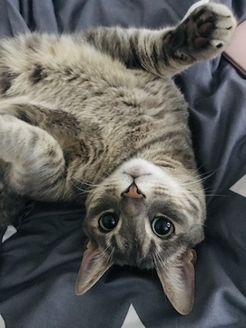

My Cat
The picture on the left is of my cat. His name is Sinian and he is an extraordinary American Shorthair who is not only striking in appearance, but also very intelligent. He was adopted by me at 2 months old and is now almost 6 years old and has grown into a handsome cat. Sinian is a proud little boy who attracts the attention of everyone who sees him. Despite his dignified nature, he also has a social personality and enjoys spending time with people. Everyone who meets Sinian will want to see him again, so my friends often tell me they miss him.